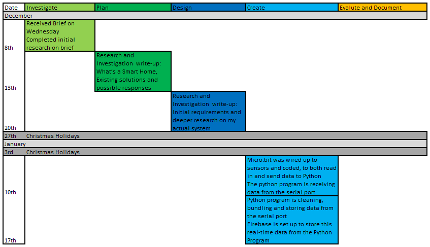
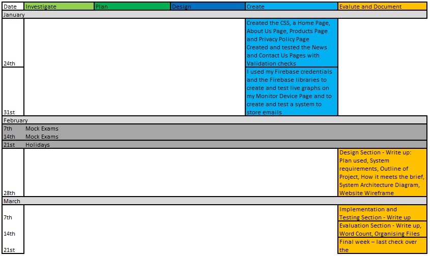
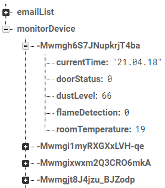

Project Timeline
 Challenges
- Mock Exams created a challenge as I couldn’t get a significant amount of work done during these two weeks. However, I used this time to reflect on my project which helped me during my Evaluation Section of the write-up.
- Working on other school projects at the same time as this project was challenging as I needed to divide my time up appropriately to balance out the workload of each project

Embedded System
My room monitoring system uses a Micro:bit to record metrics about the room and send them to a Python program to be processed.
To begin, I familiarised myself with the Micro:bit and the MakeCode editor. I tested the Micro:bit and each sensor to make sure they functioned correctly. I started by writing up the code to read in the room temperature from the temperature sensor.
To test my code, I displayed the metrics onto the OLED screen. Once that sensor was functioning, I followed the same steps to implement the flame, dust, and magnetic field sensors.
(Flowchart of the Micro:bit control plane on the right)
Step 1: The Micro:bit sets up a serial connection with the computer running the Python program and it initialises the OLED display.
Step 2: The programme performs the following every three seconds:
- Reads in dust, temperature, door status and presence of a flame
- Displays temperature and dust values on the OLED screen
- Sends the four values to the Python program through the serial connection

Python Program
Data from the Micro:bit is sent to this Python program, where it is cleaned and bundled up into timestamped records for storage in Firebase.
I started off by setting up my IDE (Thonny) and python environment by installing the Firebase libraries onto Thonny. I experimented with reading in data from the Micro:bit by setting up the Micro:bit to send data through the Serial Port and for Python to receive this data through the serial port. When I could read in raw data reliably, I started to clean the data. This was done by printing the raw data into the console and cleaning the data line by line.
Once the data was being cleaned consistently, I created a Firebase account using my google account. I selected the closest region to Ireland for lower latency and I loaded the Firebase credentials into Python and setup the Firebase client.
I organised the data into a record and then posted it to Firebase. To test, I first sent mock data and checked the Firebase console to see if it had arrived. Then I used real Micro:bit data and check the console for its arrival.
(Flowchart of the data-cleaning program control plane on the right)
Step 1: The python programme imports classes from Firebase and PySerial.
Step 2: It forms a connection with Firebase using its hardcoded credentials.
Step 3: Sets the baud rate (speed of communication over a data channel) and opens the Serial Port.
Step 4: The programme loops over the following actions:
- Finds the current time and reads in a line of data from Micro:bit.
- Cleans and bundles the data into time-stamped records.
- Sends the record to Firebase via a HTTP POST request.
- Waits for three seconds.

Monitor Your Device Page
This webpage is responsible for showing the user the data recorded by the micro:bit.
To begin, I learned about the Firebase Software Development Kit) by reading their documentation and going through their samples.
I had to import the Firebase library into the Javascript file. I loaded the credentials and setup a Firebase client. I used the client to retrieve the most recent data from Firebase.
To test this code, I added mock data to the database and I logged the data to the browser console with console.log().
I decided to use Plotly because it is covered in our school textbook. I re-familiarised myself with Plotly by going through the example in my Golden Key ‘Computer Science for Leaving Certificate’ book and referencing the Plotly website.
I created Plotly graphs for each set of sensor data.

Website Design
Our website is used to display the product supplied, allow users to access the Monitor Device page and display other information regarding smart homes.
I drafted the content for the website in a text document. I used HTML and CSS to build up the website to resemble the wireframe (Design Page).
I added features to make the website accessible to a larger audience. For instance:
- I used a clean and simple design
- I grouped data into text boxes
- I used percentages in CSS so it scales well on different display sizes
- I added a button to change the font size. The button calls a Javascript function to update the text size

To give a concise explanation of home automation systems, I embedded an informative YouTube video.
Email Subscription
Customers can subscribe to our news feed by entering their email I used my existing knowledge of Firebase to import the credentials and store the emails in Firebase.
(Email Subscription Flowchart on the right)

It’s important that customers can give feedback and get in contact with us. On the right is the contact us form with implemented validation checks and a flowchart explaining the validation process.
Contact Us Flowchart
Step 1: When the webpage is loaded, the user can input the relevant details into the required fields.
Step 2: The function runs through the inputs you entered once the “Submit” button is pressed.
Step 3: It checks the inputted data is valid and all fields of the form have been filled out.
Step 4: It then runs through each input one by one and when it finds a problem with the data entered, it will send an alert to the user who can change that input and try again.
Conclusion
Finally, I tested the system end-to-end. I verified that:
- The embedded system captures and passes data to the Python programme
- Python cleans and bundles the data into timestamped records
- Monitor Device page reads and graphs from data Firebase
- Email subscription stores data in Firebase
- The website displays all pages correctly
Here is the system working end-to-end with real-time data:
Or you can use this YouTube Link: https://www.youtube.com/watch?v=_6h3kbOzw-0